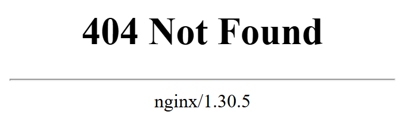
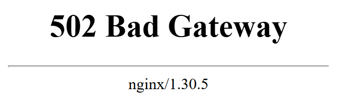
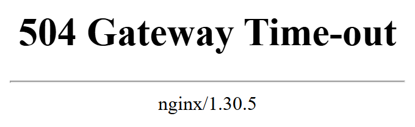

1. Vấn đề: sai chỗ tìm, không phải kém
Điện thoại rung, sếp nhắn đúng một câu: "Web không vào được em ơi." Không kèm ảnh chụp, không kèm mã lỗi, không kèm thời điểm bắt đầu. Chỉ có một mô tả mơ hồ về một hệ thống đang hỏng ở đâu đó.
Phản xạ tự nhiên của phần lớn lập trình viên backend trong tình huống này là mở IDE ra và đọc lại code. Phản xạ ấy dễ hiểu, bởi vì code là thứ duy nhất họ trực tiếp tạo ra, hiểu rõ từng dòng, và kiểm soát hoàn toàn. Nhưng nếu code không thay đổi một dòng nào kể từ hôm qua — hôm qua web vẫn chạy — thì theo một lập luận loại trừ rất đơn giản, nguyên nhân gần như chắc chắn không nằm trong code. Một hệ thống vốn đang chạy tốt chỉ có thể hỏng khi có thứ gì đó thay đổi, và nếu thứ bạn viết không thay đổi, thì thứ đã thay đổi phải nằm ở chỗ khác: trong hạ tầng bao quanh code, hoặc — như ta sẽ thấy ở tab Thời gian & Nginx — chính thời gian đã thay đổi.
Vấn đề ở đây vì vậy không phải là năng lực. Vấn đề là thiếu bản đồ. Khi trong đầu không có hình dung nào về những chặng mà một request phải đi qua trước khi chạm tới controller, người ta chỉ có thể tìm ở nơi duy nhất mình thuộc đường, giống như một người đánh rơi chìa khóa trong bóng tối nhưng lại đi tìm dưới cột đèn đường chỉ vì ở đó có ánh sáng. Toàn bộ bài học này nhằm thắp sáng những chỗ còn lại, để lần sau nhận được tin nhắn kia, bạn biết mình phải hỏi câu gì đầu tiên và loại trừ được một nửa hệ thống chỉ bằng một quan sát.
2. Đọc cho đúng một URL
Mọi hành trình của một request bắt đầu từ một chuỗi ký tự mà người dùng gõ hoặc bấm vào: URL (Uniform Resource Locator). Người dùng thấy nó như một khối liền, nhưng máy tính đọc nó như một cấu trúc gồm nhiều phần, và mỗi phần được giao cho một tầng khác nhau của hệ thống xử lý. Hiểu đúng sự phân công này là bước đầu tiên để biết một lỗi thuộc về ai.
https://api.example.com:443/users/42?active=true
└─┬─┘ └──────┬───────┘ └┬┘└───┬──┘└─────┬────┘
scheme host port path querypath (và một phần
query) là thứ code Spring Boot của bạn thực sự đọc tới.- scheme lược đồ
- Phần đứng trước
://, cho biết giao thức sẽ dùng để nói chuyện với máy chủ (http,https…). Nó còn ngầm quyết định port mặc định. - host tên máy chủ
- Một cái tên dành cho con người đọc, như
api.example.com. Máy tính không gửi được gói tin tới một cái tên; tên phải được dịch sang địa chỉ IP bởi DNS trước đã. - port cổng
- Một con số 16 bit (0–65535) chỉ ra chương trình nào trên máy đích sẽ nhận kết nối. Nếu URL không ghi port, trình duyệt dùng port mặc định của scheme.
- path đường dẫn
- Phần định danh tài nguyên bên trong ứng dụng, như
/users/42. Hạ tầng chuyển nguyên văn; chỉ ứng dụng hiểu nghĩa của nó. - query chuỗi truy vấn
- Phần sau dấu
?, gồm các cặp khóa–giá trị nhưactive=true. Trong Spring Boot, đây là thứ@RequestParamđọc ra.

#, thứ trình duyệt không bao giờ gửi lên máy chủ.Trong năm phần ấy, có ba quan sát quan trọng cần ghi nhớ, vì mỗi quan sát sẽ quay lại nhiều lần trong lộ trình.
Quan sát thứ nhất: host là một cái tên, không phải một địa chỉ. Mạng
máy tính chỉ biết chuyển gói tin tới các địa chỉ dạng số; nó không hiểu chữ. Điều này giống hệt việc
bưu điện không thể giao một lá thư chỉ đề "nhà bác Tuấn" — họ cần số nhà, tên đường, phường,
quận. Do đó giữa lúc bạn gõ tên và lúc gói tin đầu tiên được gửi đi, luôn tồn tại một bước dịch tên
thành số, và bước dịch ấy là cả một hệ thống phân tán toàn cầu riêng biệt tên là DNS. Hệ quả thực tế là
DNS trở thành một chặng có thể hỏng độc lập với mọi thứ khác: tên miền quên gia hạn, bản ghi trỏ sai,
nhà cung cấp DNS gặp sự cố — tất cả đều khiến web "không vào được" dù máy chủ và code hoàn toàn khỏe
mạnh.
Mạng máy tính chỉ biết chuyển gói tin tới các địa chỉ dạng số; nó không hiểu chữ.
Quan sát thứ hai: scheme quyết định port mặc định. Khi URL không ghi
port, trình duyệt ngầm hiểu http:// đi kèm :80 và https:// đi kèm
:443. Đây là lý do bạn chưa bao giờ phải gõ port khi vào Facebook hay GitHub, nhưng luôn
phải gõ :8080 khi chạy Spring Boot trên máy mình: ứng dụng của bạn đang nghe ở một port
không phải mặc định, nên trình duyệt không thể tự đoán. Về sau, khi đặt Nginx đứng trước ứng dụng, chính
Nginx sẽ chiếm port 443 để người dùng không bao giờ phải biết con số 8080 tồn tại.
Quan sát thứ ba: path và query là phần hạ tầng không quan
tâm. DNS, firewall, router, thậm chí phần lớn cấu hình Nginx cơ bản — không thành phần nào hiểu
/users/42 nghĩa là "người dùng số 42". Chúng chỉ chuyển nguyên văn chuỗi ấy vào trong, và
chỉ ứng dụng — tức code bạn viết — mới gán ý nghĩa cho nó. Nói cách khác, ranh giới giữa "hạ tầng" và
"ứng dụng" chạy ngang qua chính giữa URL.
Cú pháp chung của URI (tập hợp rộng hơn chứa URL) được chuẩn hóa trong RFC 3986
— Uniform Resource Identifier: Generic Syntax. Theo văn bản này, phần đứng giữa
// và đường dẫn được gọi là authority, gồm tùy chọn thông tin người dùng, host và
port; ngoài query còn có thành phần fragment sau dấu #, thứ mà trình
duyệt không bao giờ gửi lên máy chủ — nó chỉ dùng ở phía trình duyệt, chẳng hạn để
nhảy tới một mục trong trang. Còn việc http mặc định port 80 và https mặc
định port 443 được quy định trong RFC 9110 (HTTP Semantics), nơi định nghĩa
hai lược đồ URI này.
Trong Spring Boot, bạn viết @GetMapping("/users/{id}"). Thứ bạn khai báo ở đó
chỉ là phần path — một trong năm phần của URL. Bốn phần còn lại (scheme,
host, port, và việc kết nối tới đúng máy) đã được xử lý xong xuôi ở đâu đó trước khi request
chạm tới controller của bạn.
Bốn phần đó — và chuỗi hệ thống đứng sau chúng — chính là nội dung của nghề DevOps mà bạn đang bắt đầu học. Lập trình viên backend quen làm việc ở phần cuối của URL; người vận hành phải chịu trách nhiệm cho toàn bộ phần đầu.
3. Bốn khái niệm nền: địa chỉ IP, port, listen, firewall
Đây là bộ từ vựng mà mọi bài sau sẽ dùng lại, và nó ra đời để giải quyết một nhầm lẫn rất phổ biến: người mới thường gộp "địa chỉ IP", "port", "chương trình đang chạy" và "firewall" thành một khối mơ hồ gọi chung là "server", rồi khi có lỗi thì không biết khối nào hỏng. Bốn thứ đó là bốn tầng khác nhau của ngăn xếp mạng, chúng hỏng theo bốn kiểu khác nhau và cho ra bốn triệu chứng khác nhau. Vì vậy việc đầu tiên phải làm là định nghĩa từng thứ cho chính xác.
- IP address địa chỉ IP
- Con số định danh một giao diện mạng (network interface) trên mạng — với IPv4 là 32 bit,
thường viết thành bốn số như
192.168.10.38. Nó cho mạng biết phải chuyển gói tin tới cửa ngõ nào. - port cổng
- Con số 16 bit trong phần đầu gói TCP/UDP, cho hệ điều hành biết gói tin thuộc về chương trình nào trong máy. Cùng một IP có thể có hàng chục nghìn port.
- listen lắng nghe
- Trạng thái một process đã yêu cầu hệ điều hành "mọi kết nối tới port này, qua địa chỉ này, hãy giao cho tôi". Không có process nào listen thì phòng trống, dù cửa ngõ vẫn mở.
- listen address địa chỉ lắng nghe
- Địa chỉ IP cụ thể mà process gắn port của mình vào — tức "người trong phòng chịu tiếp khách từ cửa
ngõ nào". Gắn vào
127.0.0.1nghĩa là chỉ tiếp khách từ trong nhà. - firewall tường lửa
- Bộ lọc gói tin theo luật (nguồn, đích, port, giao thức), quyết định gói nào được đi qua cửa ngõ. Nó hoạt động trước khi gói tin tới được process.
Bốn định nghĩa trên đã đủ chính xác để tra cứu, nhưng chúng trừu tượng và rất dễ trôi khỏi trí nhớ sau vài ngày. Điều thực sự cần giữ lại không phải câu chữ của định nghĩa mà là sự tách bạch giữa bốn vai: địa chỉ trả lời câu hỏi tới máy nào, port trả lời chương trình nào trong máy đó, listen trả lời có ai nhận việc không, và firewall trả lời gói tin có được phép đi qua không. Để giữ được sự tách bạch ấy, ta dựng một phép so sánh.
Ẩn dụ hỗ trợ ghi nhớ: một tòa nhà
Phép so sánh dưới đây không phải định nghĩa — nó là công cụ ghi nhớ, và ta sẽ còn dùng lại nó ở nhiều bài sau. Hãy hình dung server là một tòa nhà văn phòng.
IP address = địa chỉ của MỘT CỬA NGÕ vào tòa nhà
port = số PHÒNG bên trong tòa nhà
process đang listen = có NGƯỜI ngồi trong phòng đó — và người đó
tự chọn sẽ tiếp khách đến từ cửa ngõ NÀO
firewall = BẢO VỆ đứng ở cửa ngõ, lọc ai được vàoChữ "phòng" gợi ý rằng port là một không gian vật lý có sẵn trong máy. Thực tế không có cái phòng nào cả: port chỉ là một con số 16 bit nằm trong phần đầu của gói tin, và hệ điều hành dùng con số đó để tra một bảng xem nên giao gói cho process nào. Không có process nào đăng ký thì con số đó đơn giản là không có trong bảng.
Tương tự, "cửa ngõ" gợi ý một lối đi vật lý, nhưng một máy có thể tạo ra hàng chục giao diện mạng ảo bằng phần mềm, không cần thêm sợi dây nào. Khi ẩn dụ và định nghĩa mâu thuẫn, định nghĩa thắng.
Một máy có NHIỀU địa chỉ IP, không phải một
Điều đầu tiên mô hình này phá vỡ là niềm tin ngầm rằng "mỗi máy có một địa chỉ IP". Trên thực tế, địa chỉ IP không được gán cho cái máy mà được gán cho từng giao diện mạng của nó — card WiFi, card Ethernet, card ảo của VPN, card ảo của Docker, và một card đặc biệt không có phần cứng nào đứng sau là loopback. Một chiếc laptop bình thường vì vậy có ít nhất hai, thường là ba bốn địa chỉ cùng lúc, như trong Hình 3.
MỘT CÁI LAPTOP
┌────────────────────────────────────┐
│ lo — card mạng ẢO │
│ 127.0.0.1 "chính tôi" │ ← không dây, không sóng
│ │ gói tin KHÔNG BAO GIỜ ra ngoài
│ wlan0 — card WiFi THẬT │
│ 192.168.10.38 "tôi trong mạng" │ ← router cấp, CÓ THỂ ĐỔI
│ │
│ card ảo VPN / mạng nội bộ │
│ 10.8.0.2 │
└────────────────────────────────────┘Một địa chỉ IP không định danh một MÁY. Nó định danh một CỬA NGÕ MẠNG của máy đó.
Ba địa chỉ trong Hình 3 cùng dẫn vào một laptop, nhưng chúng không thay thế được cho
nhau, bởi vì mỗi cửa mở ra một hướng khác: 127.0.0.1 là cửa hông chỉ mở vào bên
trong nhà, 192.168.10.38 là cửa chính mở ra mạng WiFi, còn 10.8.0.2 là
cửa sau mở ra một mạng nội bộ qua VPN. Một người đứng ở mạng WiFi không thể đi vào bằng cửa sau, và không
ai ở bên ngoài có thể đi vào bằng cửa hông.
Ba dải địa chỉ đặc biệt, ba mức độ "gần"
Trong không gian địa chỉ IP, có những dải được dành riêng cho mục đích đặc biệt và theo quy ước sẽ không bao giờ được định tuyến ra Internet công cộng. Ba dải bạn sẽ gặp nhiều nhất khác nhau ở chỗ "phạm vi gần" mà chúng đại diện: một dải chỉ có nghĩa bên trong một máy, một dải chỉ có nghĩa trong một đoạn mạng vật lý, và một dải có nghĩa trong cả một mạng nội bộ.
127.0.0.1 → "chỉ trong MÁY này" (loopback)
fe80::… → "chỉ trong ĐOẠN MẠNG này" (link-local, IPv6)
192.168.… → "chỉ trong MẠNG NỘI BỘ" (private)Hệ quả của việc không định tuyến ra ngoài là rất lớn và sẽ quay lại ở phụ lục IPv6: một máy chỉ có
địa chỉ 192.168.x.x thì không ai trên Internet có thể chủ động gọi tới nó, và đó chính là lý
do một server thật phải đặt ở nơi có IP công khai — trong một trung tâm dữ liệu hay trên một VPS
— chứ không chạy được trên laptop ở nhà. Chi tiết nằm ở
phụ lục IPv4, IPv6 và NAT.
Dải loopback 127.0.0.0/8 được quy định trong RFC 1122
(Requirements for Internet Hosts), với yêu cầu rằng địa chỉ dạng này không bao giờ được xuất
hiện bên ngoài một máy. Ba dải địa chỉ riêng 10.0.0.0/8, 172.16.0.0/12 và
192.168.0.0/16 được dành cho mạng nội bộ trong RFC 1918. Với IPv6, dải
link-local fe80::/10 và địa chỉ loopback ::1 được định nghĩa trong
RFC 4291 (IP Version 6 Addressing Architecture). Còn tên
localhost được chính thức xếp vào nhóm tên đặc biệt, luôn chỉ về loopback, trong
RFC 6761.
Vì sao localhost là một từ tương đối
Giờ hãy áp mô hình vào một tình huống ai cũng từng gặp. Bạn chạy Spring Boot, mở
http://localhost:8080 thấy chạy tốt, rồi gửi đúng đường link ấy cho đồng nghiệp ngồi bàn
bên để họ thử. Họ báo không vào được. Code không sai, máy bạn không sai, vậy cái gì sai?
Cái sai nằm ở chỗ localhost không trỏ tới một địa điểm cố định nào trên mạng. Khi đồng
nghiệp gõ localhost, hệ điều hành trên máy họ dịch tên ấy thành địa chỉ loopback —
127.0.0.1, hoặc trên nhiều hệ thống hiện đại là ::1 của IPv6 — tức cửa hông của
chính máy họ. Request của họ vì vậy không bao giờ rời khỏi máy họ; nó đi vòng qua card
loopback và gõ cửa phòng 8080 của tòa nhà mà họ đang đứng bên trong. Ở đó không có ai ngồi, nên họ nhận
lại lời từ chối. Nói theo mô hình tòa nhà: họ đã tới đúng số phòng, nhưng ở sai tòa nhà.
localhost không phải một địa điểm. Nó là một từ tương đối — giống chữ "ở
đây". Nghĩa của nó thay đổi theo người nói. Bạn nhắn cho người khác "tới đây gặp tôi" thì họ
sẽ hiểu "đây" là chỗ họ đang ngồi, chứ không phải chỗ bạn đang ngồi.
Để đồng nghiệp vào được, cần BA điều kiện chứ không phải một
Sửa đường link thành địa chỉ WiFi của bạn mới chỉ là điều kiện đầu tiên. Mô hình tòa nhà cho thấy còn hai "cửa ải" nữa, và mỗi cửa ải khi không thỏa mãn sẽ để lại một triệu chứng khác nhau — đây chính là giá trị chẩn đoán của việc tách khái niệm.
| # | Điều kiện | Vai trong mô hình | Thiếu thì thấy gì |
|---|---|---|---|
| 1 | Dùng đúng địa chỉ cửa ngõ, ví dụ 192.168.10.38:8080 | IP | refused (ở chính máy họ) |
| 2 | Firewall cho gói tin từ ngoài vào port 8080 | Bảo vệ | timeout |
| 3 | App chịu tiếp khách từ cửa chính, không chỉ cửa hông | Người trong phòng | refused |
Điều kiện 3 có một cái tên chuyên môn: listen address. Một process khi mở port có
thể chọn gắn vào 127.0.0.1 (chỉ nhận kết nối từ trong máy), vào một địa chỉ cụ thể như
192.168.10.38, hoặc vào địa chỉ đặc biệt 0.0.0.0 nghĩa là "mọi cửa ngõ". Đây
là điều kiện hay bị bỏ sót nhất, bởi vì từ phía người gọi, thiếu 3 trông giống hệt thiếu 1: cả hai đều
cho ra refused. Nó cũng là lỗi kinh điển nhất khi bắt đầu đóng gói ứng dụng vào Docker, nơi
"cửa hông" của container không phải là cửa hông của máy bạn. Cơ chế này được mổ xẻ trọn vẹn ở
Bài 04.
Gặp lỗi mạng, đừng tắt firewall cho nhanh. Hãy mở đúng một port, cho đúng nguồn cần thiết. Trên Windows, lệnh dưới đây chỉ cho phép các máy trong cùng mạng con gọi vào port 8080, còn mọi thứ khác vẫn bị chặn như cũ:
New-NetFirewallRule -DisplayName "Spring Boot dev 8080" `
-Direction Inbound -LocalPort 8080 -Protocol TCP `
-RemoteAddress LocalSubnet -Action AllowNguyên tắc đứng sau có tên là least privilege — đặc quyền tối thiểu: mỗi thành phần chỉ được cấp đúng phần quyền nó cần, không hơn. "Tắt firewall cho nhanh" là một trong những nguyên nhân phổ biến nhất khiến server production bị chiếm quyền, và lý do rất con người: thói quen hình thành trên máy dev là thói quen bạn sẽ mang lên server lúc ba giờ sáng khi đang vội.
4. Từ mạng LAN lên Internet: bốn thứ mọc thêm
Bốn khái niệm ở tab trước mô tả một tình huống trong mạng LAN, nơi hai máy ngồi cạnh nhau. Giờ hãy
đưa nó lên Internet thật: ứng dụng nằm trên một VPS — một máy Linux thuê trong trung tâm dữ liệu, chạy
24/7 — còn người dùng ngồi ở nhà và gõ https://api.tuan.dev/users/42. Khoảng cách xa hơn
và môi trường thù địch hơn khiến bốn thành phần mới buộc phải xuất hiện, và mỗi thành phần tồn tại để
giải quyết đúng một vấn đề mà mạng LAN chưa có.
| Mọc thêm | Chặng | Vì sao phải có |
|---|---|---|
| DNS | 2 | Người dùng chỉ biết cái tên api.tuan.dev, không biết địa chỉ số của VPS |
| TLS | 4 | https đòi hỏi mã hóa đường truyền, và quan trọng hơn, phải chứng minh máy bên kia đúng là api.tuan.dev |
| Firewall | 6 | Cửa ngõ giờ phơi ra toàn bộ Internet, nơi có bot quét port liên tục — cần một bảo vệ thật |
| Nginx | 7 | Phải có ai đó gỡ lớp mã hóa, và phân luồng khi nhiều website cùng chạy trên một máy |
Ghép bốn thành phần ấy với những gì đã có, ta được tấm bản đồ đầy đủ trong Hình 5. Hãy đọc nó từ trên xuống như đọc hành trình của một gói hàng: nửa trên diễn ra trên máy người dùng, nửa dưới diễn ra trên VPS, và ở giữa là Internet — một vùng mà bạn không kiểm soát được gì.
┌──────────────── MÁY NGƯỜI DÙNG ─────────────────────────┐
│ 1 Trình duyệt tách URL: scheme/host/port/path │
│ 2 DNS "api.tuan.dev là số mấy?" → 123.45.67.89 │
│ 3 TCP mở kết nối tới 123.45.67.89, phòng 443 │
│ 4 TLS bắt tay, kiểm chứng chỉ, bật mã hóa │
│ 5 HTTP gửi "GET /users/42" + headers │
└──────────────────────────┬──────────────────────────────┘
│
~~~ INTERNET ~~~
│
┌────────── VPS (một máy Linux chạy 24/7) ────────────────┐
│ 6 FIREWALL cửa 443 có mở không? │
│ ▼ │
│ 7 NGINX gỡ mã hóa TLS │
│ phòng 443 đọc header Host → biết hỏi web nào │
│ cửa CHÍNH đọc path → biết đẩy đi đâu │
│ ▼ │
│ 8 SPRING BOOT định tuyến, chạy logic │
│ phòng 8080 │
│ cửa HÔNG ← chỉ Nginx gọi được │
│ ▼ │
│ 9 POSTGRESQL truy vấn dữ liệu │
│ phòng 5432 │
│ cửa HÔNG ← chỉ app gọi được │
└─────────────────────────────────────────────────────────┘
Có một chi tiết tinh tế trong thứ tự 3 4 5 đáng dừng lại. Kết nối TCP ở chặng 3 phải được thiết
lập xong trước, bởi vì TLS ở chặng 4 là một cuộc hội thoại chạy bên trên kết nối đó; và chỉ khi
TLS đã bật mã hóa, trình duyệt mới gửi dòng GET /users/42 ở chặng 5. Hệ quả là path và
header của request — kể cả cookie đăng nhập — đi qua Internet ở dạng đã mã hóa, người đứng giữa không
đọc được. Nhưng tên miền thì khác: nó đã lộ từ chặng 2 (câu hỏi DNS thường không mã hóa) và thường được
gửi ở dạng rõ trong bước bắt tay TLS để máy chủ biết phải trình chứng chỉ nào. Nói cách khác, HTTPS giấu
bạn làm gì trên một website, nhưng thường không giấu được bạn đang vào website nào.
Tấm bản đồ này không phải một cách vẽ tùy hứng; mỗi chặng tương ứng với một họ chuẩn Internet được viết độc lập. DNS được đặt nền trong RFC 1034 và RFC 1035. TCP — với cơ chế bắt tay ba bước ở chặng 3 — hiện được đặc tả trong RFC 9293. Phiên bản TLS hiện đại, TLS 1.3, nằm trong RFC 8446. Ngữ nghĩa của HTTP, gồm phương thức, header và mã trạng thái, nằm trong RFC 9110. Việc chúng tách thành nhiều chuẩn là một lựa chọn thiết kế có chủ đích gọi là phân tầng: mỗi tầng chỉ dựa vào dịch vụ của tầng bên dưới, nên có thể thay thế hoặc sửa một tầng mà không phải viết lại các tầng khác.
Cùng một cấu hình, bối cảnh khác nhau biến bug thành feature
Hãy nhìn kỹ hai dòng "cửa HÔNG" trong Hình 5. Ở tab Bốn khái niệm, việc ứng dụng chỉ listen
ở 127.0.0.1 là lỗi, bởi vì nó khiến đồng nghiệp không vào được. Trên
production, đúng cấu hình đó lại trở thành một tính năng bảo mật: chỉ Nginx — đứng cùng
trong máy — được phép gọi vào ứng dụng, còn không ai từ Internet có thể chạm trực tiếp vào port 8080, kể
cả khi firewall vô tình mở nhầm. PostgreSQL ở chặng 9 cũng vậy: nó chỉ tiếp khách từ cửa hông, nên
chỉ ứng dụng mới truy vấn được.
Cùng một cấu hình. Bối cảnh khác nhau biến nó từ bug thành feature. Đây là một bài học khái quát hơn nhiều so với chuyện listen address: trong vận hành hệ thống, hiếm có cấu hình nào "đúng" hay "sai" một cách tuyệt đối. Một cấu hình chỉ đúng hay sai so với mục đích mà nó phục vụ, và muốn phán xét nó thì trước hết phải biết nó đang đứng ở chặng nào trên bản đồ.
Con số đáng nhớ nhất của cả bài
Chín chặng. Chỉ chặng 8 là code bạn viết.
Tám chặng còn lại là hạ tầng. Vì vậy khi sếp nhắn "web không vào được" mà code không đổi dòng nào từ hôm qua, xác suất lỗi nằm ở tám chặng kia lớn hơn rất nhiều so với chặng bạn quen thuộc. Tìm lỗi mà chỉ nhìn chặng 8 cũng giống như kiểm tra một phần chín quãng đường rồi kết luận cả con đường không có ổ gà.
Đó là toàn bộ lý do nghề DevOps tồn tại: có người phải hiểu và chịu trách nhiệm cho tám chặng mà lập trình viên ứng dụng thường không nhìn thấy.
5. Bảng tra triệu chứng — kèm cột "ai viết ra"
Bản đồ chỉ thật sự hữu ích khi nó giúp ta đi ngược từ triệu chứng về nguyên nhân. Bảng dưới đây làm đúng việc đó, nhưng nó có thêm một cột mà tài liệu thông thường không có: ai viết ra thông báo lỗi mà người dùng nhìn thấy. Cột này quan trọng bởi vì mỗi thông báo lỗi đều có một tác giả, và tác giả ấy chỉ có thể viết ra thông báo nếu chính nó còn sống và đã nhận được request. Biết tác giả là biết request đã đi tới đâu trên bản đồ.
| Người dùng thấy | Ai viết ra | Chặng | Nghi ngờ đầu tiên |
|---|---|---|---|
"Không tìm thấy máy chủ"NXDOMAIN | Trình duyệt / HĐH của người dùng, dựa trên câu trả lời của DNS | 2 | Domain chưa trỏ, gõ sai, hoặc hết hạn |
Timeout | Không ai cả | 3 6 | Máy chết, sai IP, firewall nuốt gói tin |
Connection refused | Kernel của server | 3 7 | Máy sống, nhưng phòng đó trống Nginx chết |
ERR_CERT_DATE_INVALID | Trình duyệt người dùng | 4 | Chứng chỉ hết hạn / cấp cho tên miền khác |
| 502 Bad Gateway | Nginx | 78 | App chết, sai port, container chưa lên |
| 504 Gateway Timeout | Nginx | 78 | App sống nhưng trả lời quá chậm |
| 503 Service Unavailable | Nginx hoặc app | 7 8 | App đang khởi động, hoặc dính rate limit |
| 500 Internal Server Error | Spring Boot | 8 | Bug trong code — giờ mới đọc code |
| 404 Not Found | Nginx hoặc Spring Boot | 7 8 | Sai path, hoặc Nginx định tuyến nhầm |
Log app: pool exhausted | Spring Boot | 9 | DB chết, quá tải, hoặc rò rỉ connection |
Hai dòng đầu bảng có tác giả đặc biệt. Với NXDOMAIN, không máy chủ nào của bạn được liên
lạc cả: DNS resolver trả lời rằng tên miền không tồn tại, và trình duyệt trên máy người dùng tự viết
thông báo lỗi dựa trên câu trả lời đó. Với timeout, tình hình còn cực đoan hơn: không có ai
viết ra gì hết. Timeout chỉ là việc phía gọi đã chờ đủ lâu mà không nhận được bất kỳ phản hồi nào, và tự
bỏ cuộc. Sự vắng mặt của tác giả chính là thông tin.
Ý nghĩa của các mã trạng thái HTTP được chuẩn hóa trong RFC 9110. Theo văn bản này, 502 Bad Gateway nghĩa là máy chủ, trong vai trò gateway hay proxy, đã nhận được một phản hồi không hợp lệ từ máy chủ phía sau nó; 504 Gateway Timeout nghĩa là gateway không nhận được phản hồi kịp thời từ phía sau. Hãy để ý cụm từ "trong vai trò gateway hay proxy": chính định nghĩa chuẩn đã nói rằng 502 và 504 là lời của người đứng giữa, tức Nginx trong kiến trúc của ta — không phải lời của ứng dụng. Còn 500 Internal Server Error nghĩa là máy chủ gặp một tình huống bất ngờ khiến nó không hoàn thành được request, và máy chủ ấy ở đây là chính Spring Boot.
Cặp quan trọng nhất: 502 và 500
Nếu chỉ được nhớ một điều từ bảng tra, hãy nhớ sự khác biệt giữa 502 và 500. Hai con số này trông giống nhau — cùng bắt đầu bằng 5, cùng là "lỗi máy chủ" — nhưng chúng chỉ về hai chỗ hoàn toàn khác nhau trên bản đồ, và dẫn tới hai hành động chẩn đoán đối lập nhau.
| Mã | Ai viết trang lỗi | App có nhận được request không |
|---|---|---|
| 502 | Nginx tự viết | Không — app im lặng, hoặc đã chết |
| 500 | Spring Boot viết, Nginx bê hộ | Có — app nhận, xử lý, rồi ngã |
502 → ĐỪNG mở code. Code không chạy dòng nào cả.
Đi xem: process còn sống không? container còn chạy không? sai port không?
500 → GIỜ mới mở code. App đã chạy và tự ném exception.
Đi xem: log ứng dụng, stack trace.Ẩn dụ hỗ trợ ghi nhớ: Nginx là lễ tân
Cơ chế vừa mô tả có thể gói lại thành một phép so sánh dễ nhớ hơn câu chữ của định nghĩa. Hãy coi Nginx là lễ tân của tòa nhà: nó nhận yêu cầu của khách ở quầy, tự đi vào trong hỏi giúp, rồi bê kết quả ra. Khách không bao giờ được đi vào trong.
Với cách nhìn đó, hai mã lỗi trở nên hiển nhiên. Khi lễ tân trả lời 502, nghĩa là lễ tân đã đi vào trong gõ cửa phòng 8080 nhưng không ai mở, hoặc người bên trong trả lời những thứ vô nghĩa — nên lễ tân tự viết một mẩu giấy xin lỗi đưa cho khách. Khi lễ tân mang ra 500, nghĩa là người trong phòng đã nhận yêu cầu, bắt tay vào làm, rồi gặp sự cố và tự viết giấy báo lỗi; lễ tân chỉ bê mẩu giấy ấy ra nguyên vẹn, không đọc, không sửa.
Một lễ tân thật phục vụ lần lượt từng khách. Nginx thì xử lý hàng nghìn kết nối cùng lúc trên một tiến trình nhờ mô hình hướng sự kiện (event-driven): nó không "đứng chờ" ứng dụng trả lời mà đăng ký theo dõi rồi quay sang phục vụ khách khác. Ẩn dụ giúp nhớ ai viết ra trang lỗi; nó không mô tả đúng cách Nginx chịu tải.
Với 502, log ứng dụng của bạn sẽ trống trơn — vì ứng dụng có nhận được gì đâu mà ghi log. Với 500, sẽ có một stack trace nằm đó chờ bạn. Chính sự vắng mặt của log cũng là một bằng chứng, và trong nhiều cuộc điều tra, đó là bằng chứng đầu tiên bạn có được.
Phân biệt tác giả của 404 ngay bằng mắt



proxy_read_timeout 2s (504). Cả ba cùng một khuôn và cùng chữ ký nginx/1.30.5 ở cuối — đó là cách nhận ra người viết. Hai chi tiết chỉ lộ ra khi chạy thật: Nginx viết "Gateway Time-out" có gạch nối, khác cụm "Gateway Timeout" trong RFC 9110; và trang 502 mất 2,03 giây mới hiện, vì trên Windows một lần kết nối bị từ chối tốn khoảng 2 giây — đúng hiện tượng đã đo ở Lab 4 (xem trang mổ băng output).404 là trường hợp mơ hồ nhất trong bảng, vì cả Nginx lẫn Spring Boot đều có thể viết ra nó. May mắn là mỗi tác giả để lại một "chữ ký" dễ nhận ra, như trong Hình 7: Nginx viết một trang HTML đơn giản và thường ký tên phiên bản của mình ở cuối, còn Spring Boot viết trang Whitelabel hoặc một đối tượng JSON theo cấu hình của bạn.
Nginx viết: Spring Boot viết:
┌──────────────────────┐ ┌──────────────────────┐
│ 404 Not Found │ │ Whitelabel Error Page│
│ ────────────────── │ │ hoặc JSON: │
│ nginx/1.24.0 │ ← ký tên│ {"status":404, ...} │
└──────────────────────┘ └──────────────────────┘
→ Nginx chưa đẩy tới app → App có nhận, nhưng không có route đó
→ Lỗi CẤU HÌNH → Lỗi CODE / sai URL6. Ba nguyên tắc chẩn đoán
Bảng tra là công cụ; ba nguyên tắc dưới đây là cách tư duy đứng sau công cụ ấy. Chúng được phát biểu tổng quát, vì chúng không chỉ đúng với bài này mà sẽ đúng với mọi sự cố bạn gặp về sau, từ Docker tới Kubernetes.
Mọi mã lỗi HTTP đều là một CÂU TRẢ LỜI.
502, 504, 500, 404 — muốn nhận được bất kỳ con số
nào trong số đó, phía gọi phải đã bắt tay thành công với một ai đó: kết nối TCP đã mở, TLS đã
thương lượng xong, request đã được gửi đi và có người đọc nó. Ngược lại, refused và
timeout hoàn toàn không phải mã HTTP; chúng là lỗi ở tầng thấp hơn, nghĩa là chưa có
cuộc hội thoại HTTP nào diễn ra cả.
Thấy SỐ → đã vào được nhà → soi NỬA TRONG (7, 8, 9)
Không thấy → còn ngoài cổng → soi NỬA NGOÀI (2, 3, 6, 7)Một câu hỏi duy nhất vừa loại bỏ được một nửa bản đồ. Đây chính là tư duy tìm kiếm nhị phân mà bạn đã quen trong thuật toán, được áp vào hạ tầng.
Triệu chứng không chỉ cho biết chặng nào HỎNG — nó còn chứng minh mọi chặng TRƯỚC đó đã chạy tốt.
Lý do nằm ở tính tuần tự của bản đồ: chặng 4 chỉ có thể diễn ra khi chặng 2 và 3 đã thành công. Vì vậy, nhìn thấy lỗi chứng chỉ ở chặng 4 đồng nghĩa với việc được tặng miễn phí hai thông tin: DNS đã trả lời đúng địa chỉ, và kết nối TCP đã mở được. Hai chặng bị loại khỏi vùng nghi ngờ mà bạn không phải chạy một lệnh kiểm tra nào.
Sửa một tầng thì triệu chứng ĐỔI, chứ không chắc hết lỗi. Và triệu chứng mới chính là bằng chứng rằng tầng vừa sửa đã đúng.
Giả sử ban đầu bạn thấy timeout, rồi sau khi mở firewall thì thấy
refused. Người thiếu kinh nghiệm sẽ thất vọng vì "vẫn lỗi"; người có kinh nghiệm sẽ vui,
bởi vì triệu chứng mới nói rằng gói tin giờ đã tới được máy và được kernel trả lời — tức firewall đã
được sửa đúng, và thủ phạm còn lại nằm ở chặng sau nó. Cũng vì nguyên tắc này, người có kinh nghiệm
không bao giờ sửa năm thứ cùng lúc rồi đoán xem cái nào có tác dụng: sửa từng thứ một thì mỗi lần sửa
là một phép thí nghiệm có kết quả đọc được.
Một phép thử dứt khoát: refused và timeout
Hai triệu chứng refused và timeout thường bị gộp chung thành "không kết nối
được", nhưng về cơ chế, chúng khác nhau tận gốc. Khi bạn gọi tới một máy còn sống ở một port không có
ai listen, kernel của máy đó chủ động gửi lại một gói tin TCP có cờ RST (reset) — một lời từ
chối lịch sự nhưng dứt khoát. Phía gọi nhận được gói ấy và dừng ngay lập tức. Ngược lại, khi gói tin bị
firewall lặng lẽ vứt bỏ, hoặc máy đích không tồn tại, thì không có gì quay về cả; phía gọi cứ chờ, và chỉ
dừng khi hết thời gian chờ mà chính nó đặt ra.
refused → curl DỪNG VÌ NÓ NHẬN ĐƯỢC CÂU TRẢ LỜI
Có điểm kết thúc CỦA RIÊNG NÓ. Không phụ thuộc vào ta.
timeout → curl DỪNG VÌ TA BẢO NÓ DỪNG
Thời lượng của nó là con số BẠN chọn (--max-time).
Đặt 5 giây thì 5 giây. Đặt 15 thì 15.Từ cơ chế này rút ra một hệ quả chẩn đoán quan trọng: refused chỉ có thể xảy ra khi máy
đích còn sống, bởi vì phải có một kernel đang chạy mới gửi được gói RST. Cần
nói thêm một ngoại lệ cho trung thực: một số firewall được cấu hình để từ chối (reject) thay vì
vứt bỏ (drop) gói tin, và khi đó chúng chủ động gửi lời từ chối thay cho máy đích, khiến phía gọi
cũng thấy lỗi kiểu refused. Vì vậy quy tắc chính xác là: timeout thường chỉ về firewall kiểu drop
hoặc máy không tồn tại, còn refused thường chỉ về một máy còn sống mà phòng trống.
Hành vi "gửi RST khi không có ai listen" được quy định trong đặc tả TCP, hiện là RFC 9293: khi một đoạn TCP tới một kết nối không tồn tại, bên nhận trả lời bằng một đoạn reset. Chính đoạn reset ấy là thứ mà thư viện mạng trong curl, trình duyệt hay Java dịch ra thành thông báo Connection refused.
Số đo thật trên máy học viên — kể cả một con số lệch khỏi lý thuyết và lời giải thích cho nó — nằm ở trang mổ băng output.
7. Chứng chỉ TLS thật ra là gì
Chứng chỉ TLS là một trong những khái niệm bị hiểu sai nhiều nhất bởi người mới, và hiểu sai phổ biến nhất là cho rằng nó "gắn tên miền với địa chỉ IP". Việc gắn tên với số là việc của DNS ở chặng 2; chứng chỉ không hề tham gia. Chứng chỉ giải quyết một vấn đề khác hẳn, xuất hiện ở chặng 4, và vấn đề đó có thể phát biểu thành một câu hỏi rất đời thường.
Bạn kết nối tới 123.45.67.89. Máy đó nói: "Chào, tôi là api.tuan.dev."
Nhưng ai cũng nói được câu đó. Lấy gì để tin?
Lời giải mà web đang dùng có tên là hạ tầng khóa công khai (public key infrastructure, viết tắt PKI). Ý tưởng cốt lõi là chuyển vấn đề "làm sao tin một người lạ" thành vấn đề "làm sao tin một bên thứ ba mà cả hai cùng tin", rồi để bên thứ ba ấy đứng ra bảo lãnh. PKI dựng trên bốn thành phần sau, và cần nắm cả bốn trước khi nói tiếp.
- Certificate chứng chỉ
- Một tài liệu điện tử theo định dạng X.509, ghi rằng "khóa công khai này thuộc về tên miền này", có thời hạn hiệu lực, và được một CA ký bằng chữ ký số.
- CA Certificate Authority · tổ chức cấp chứng chỉ
- Tổ chức được trình duyệt tin tưởng, có quyền ký chứng chỉ sau khi kiểm tra rằng người xin đang kiểm soát tên miền.
- Public key khóa công khai
- Nửa công khai của một cặp khóa mật mã, nằm ngay trong chứng chỉ, ai cũng có thể đọc.
- Private key khóa bí mật
- Nửa bí mật của cặp khóa, chỉ nằm trên máy chủ. Chỉ ai giữ nó mới chứng minh được mình là chủ của chứng chỉ.
Từ cấu trúc đó, chứng chỉ làm hai việc, và người mới thường chỉ biết việc thứ hai.
Việc thứ nhất là danh tính: chứng minh máy đang nói chuyện với bạn đúng là
api.tuan.dev. Việc thứ hai là chìa khóa: cung cấp khóa công khai để hai bên
thiết lập mã hóa. Thứ tự này không tùy tiện, bởi vì không có việc thứ nhất thì việc thứ hai trở nên vô
nghĩa — một đường dây được mã hóa cực kỳ chắc chắn nhưng nối tới kẻ xấu thì cũng chẳng bảo vệ
được gì. Mã hóa chỉ có giá trị khi bạn chắc chắn mình đang mã hóa cho đúng người.
Ẩn dụ hỗ trợ ghi nhớ: giấy tờ tùy thân
Cấu trúc lòng tin vừa mô tả không phải phát minh của ngành máy tính — xã hội đã dùng nó từ lâu, dưới dạng giấy tờ tùy thân. Bạn không tin một người lạ chỉ vì họ tự giới thiệu tên; bạn tin vì họ trình ra một tấm căn cước do một cơ quan mà cả hai cùng tin tưởng cấp. Bảng 5 đối chiếu từng thành phần của PKI với thành phần tương ứng ngoài đời, để bốn định nghĩa ở trên có chỗ bám.
| Đời thật | TLS |
|---|---|
| Thẻ căn cước | Certificate — chứng chỉ |
| Bộ Công an cấp | CA — Certificate Authority (Let's Encrypt, DigiCert…) |
| Con dấu khó làm giả | Chữ ký số của CA |
| Bạn tin Bộ Công an | Trình duyệt và hệ điều hành có sẵn danh sách CA đáng tin (root store), cài sẵn trong máy |
Căn cước ngoài đời chứng minh bạn là ai: có tên, ngày sinh, quê quán. Chứng chỉ phổ biến nhất trên web lại không chứng minh điều đó — loại DV (Domain Validated) chỉ ghi được mỗi tên miền, và CA cấp nó sau khi kiểm tra rằng người xin đang kiểm soát tên miền, chứ không kiểm tra người đó là ai. Hệ quả của khác biệt này rất lớn, và ta sẽ thấy nó ở mục DNS là gốc rễ của lòng tin ngay bên dưới.
Khác biệt thứ hai: căn cước bị mất thì báo công an và thu hồi được. Chứng chỉ thì cơ chế thu hồi hoạt động rất kém trong thực tế, nên ngành chọn cách khác — rút ngắn thời hạn.
Certificate → CÔNG KHAI. Ai cũng tải được. Bấm ổ khóa trên
trình duyệt là xem được cert của bất kỳ web nào.
Private key → BÍ MẬT. Nằm trong một file trên server bạn.
ĐÂY mới là thứ bị đánh cắp.Certificate giống tấm căn cước — cho ai xem cũng được, ai chụp lại cũng được. Private key giống khuôn mặt và vân tay của bạn — thứ chứng minh tấm căn cước đó đúng là của bạn. Kẻ trộm lấy được bản chụp căn cước thì chưa làm gì được; kẻ trộm lấy được private key thì mạo danh được bạn hoàn toàn.
Định dạng chứng chỉ dùng trên web là X.509, với hồ sơ dành cho Internet được đặc tả trong RFC 5280; văn bản này cũng định nghĩa danh sách thu hồi chứng chỉ (CRL). Cuộc bắt tay ở chặng 4 — nơi máy chủ trình chứng chỉ và chứng minh mình giữ private key tương ứng — được mô tả trong RFC 8446 cho TLS 1.3. Quy trình tự động để CA kiểm tra quyền kiểm soát tên miền và cấp chứng chỉ, thứ mà Let's Encrypt dùng, là giao thức ACME trong RFC 8555.
Vì sao chứng chỉ chỉ sống 90 ngày
Chứng chỉ của Let's Encrypt có hạn 90 ngày, và câu hỏi tự nhiên là: tại sao không cấp hẳn mười năm cho đỡ phiền? Câu trả lời gồm ba lý do, và cả ba đều là những lập luận về rủi ro chứ không phải về kỹ thuật thuần túy.
| Lý do | Giải thích |
|---|---|
| Giới hạn thiệt hại | Private key lộ kẻ xấu mạo danh được cho tới khi cert hết hạn. Hạn 10 năm = tối đa 10 năm thiệt hại. Hạn 90 ngày = tối đa 90 ngày. |
| ÉP phải tự động hóa | Cert 10 năm thì làm tay, rồi 10 năm sau không ai còn nhớ quy trình. Cert 90 ngày thì bắt buộc phải viết script — và script chạy 4 lần/năm thì luôn được kiểm chứng. |
| Thu hồi không đáng tin | Cơ chế kiểm tra thu hồi của trình duyệt trên thực tế rất không đáng tin cậy. Nên trong thực tế, hạn ngắn CHÍNH LÀ cơ chế thu hồi. |
Lý do thứ ba cần giải thích thêm. Về lý thuyết, khi private key bị lộ, chủ sở hữu có thể yêu cầu CA thu hồi chứng chỉ, và trình duyệt sẽ kiểm tra danh sách thu hồi trước khi tin một chứng chỉ. Trên thực tế, việc kiểm tra này tốn thời gian và dễ thất bại vì mạng, nên trình duyệt thường chọn cách "thất bại mềm": không kiểm tra được thì vẫn tin. Hệ quả là một chứng chỉ đã bị thu hồi vẫn có thể được chấp nhận. Khi cơ chế thu hồi không đáng tin, cách duy nhất đảm bảo một chứng chỉ bị lộ sẽ ngừng có hiệu lực là làm cho nó tự hết hạn thật sớm.
Hạn ngắn không phải sở thích riêng của Let's Encrypt mà là hướng đi của cả ngành. Năm 2025, CA/Browser Forum — tổ chức nơi các CA và các hãng trình duyệt thống nhất luật cấp chứng chỉ công khai — đã thông qua đề xuất SC-081, rút ngắn thời hạn tối đa của chứng chỉ TLS công khai theo từng bước, xuống còn 47 ngày vào năm 2029. Nói cách khác, trong vài năm tới, việc gia hạn chứng chỉ bằng tay sẽ không chỉ là thói quen xấu mà sẽ trở nên bất khả thi — tự động hóa là con đường duy nhất.
Quy trình chạy 1 lần / 10 năm → chắc chắn đã hỏng, chỉ là chưa ai biết
Quy trình chạy 4 lần / năm → luôn được kiểm chứng, luôn còn hoạt động
Backup không bao giờ restore thử → không phải backup, là niềm tin
Backup restore hàng tuần → mới thật là backupMột quy trình hiếm khi chạy sẽ âm thầm mục ruỗng: môi trường thay đổi, người viết nghỉ việc, lệnh cũ không còn đúng — và không ai phát hiện cho tới đúng hôm cần tới nó. Nguyên tắc này sẽ gặp lại ở Bài 09 (diễn tập khôi phục backup) và Bài 23 (rollback).
DNS là gốc rễ của lòng tin — và điều đó đáng sợ
Đến đây, một câu hỏi phản biện tự nhiên nảy ra: nếu kẻ tấn công chiếm được tài khoản quản lý DNS của
bạn và trỏ api.tuan.dev về máy của hắn, thì chứng chỉ có chặn được hắn không? Trực giác nói
"có", vì hắn không có private key của bạn. Nhưng trực giác sai, và lý do nằm ở cách CA xác minh quyền sở
hữu tên miền.
Kẻ xấu xin Let's Encrypt cấp cert cho api.tuan.dev
▼
Let's Encrypt: "Chứng minh anh sở hữu tên miền đi.
Tạo cho tôi một bản ghi DNS thế này."
▼
Kẻ xấu ĐANG NẮM DNS → tạo bản ghi đó trong 5 giây
▼
Let's Encrypt: "OK, anh đúng là chủ." → cấp cert HỢP LỆ THẬT
▼
Người dùng thấy: ổ khóa, không cảnh báo gìCA không có cách nào biết "chủ sở hữu" là ai. CA chỉ biết ai đang KIỂM SOÁT tên miền. Kẻ tấn công không cần đánh cắp private key của bạn; hắn chỉ cần tự tạo một cặp khóa mới và xin một chứng chỉ mới — hoàn toàn hợp lệ — cho cặp khóa ấy.
Rất nhiều người nghĩ HTTPS là lớp bảo vệ ngoài cùng. Thực ra bên dưới nó còn một tầng nữa, và tầng đó là DNS: lòng tin vào chứng chỉ được xây trên lòng tin vào quyền kiểm soát tên miền. Vì vậy có ba việc phòng thủ cần làm, xếp theo thứ tự ưu tiên:
- Bật 2FA cho tài khoản nhà đăng ký tên miền — ưu tiên còn cao hơn cả 2FA của GitHub, vì mất tài khoản này là mất cả tên miền lẫn HTTPS.
- Khai báo bản ghi CAA — một bản ghi DNS nói rằng "chỉ CA này được cấp chứng chỉ cho tên miền của tôi", để các CA khác từ chối yêu cầu.
- Theo dõi Certificate Transparency — mọi chứng chỉ công khai đều bị ghi vào các sổ nhật ký công khai chỉ-ghi-thêm; đăng ký theo dõi thì hễ có ai xin chứng chỉ cho tên miền của bạn, bạn sẽ biết.
Bản ghi CAA (Certification Authority Authorization) hiện được đặc tả trong RFC 8659; các CA công khai buộc phải kiểm tra nó trước khi cấp chứng chỉ. Certificate Transparency được mô tả lần đầu trong RFC 6962: các log công khai được xây theo cấu trúc cây Merkle, cho phép bất kỳ ai kiểm chứng rằng log chỉ được ghi thêm chứ không bị sửa hay xóa bớt. Lưu ý rằng cả hai cơ chế đều không cứu được bạn nếu kẻ tấn công đã chiếm trọn DNS — với CAA, hắn có thể sửa luôn bản ghi CAA. Chúng thu hẹp bề mặt tấn công và giúp phát hiện sớm, chứ không thay thế được việc bảo vệ tài khoản DNS.
Việc 2 và 3 sẽ được làm thật ở Bài 18.
Cuối cùng, để giữ bức tranh cân bằng: khi kẻ xấu KHÔNG nắm DNS — ví dụ hắn ngồi trên mạng WiFi của quán cà phê và chen vào giữa đường truyền — thì chứng chỉ chặn được hắn hoàn toàn, vì hắn không thể trình ra một chứng chỉ hợp lệ cho tên miền của bạn. Đó mới là kịch bản tấn công phổ biến, và đó là lúc HTTPS thật sự cứu bạn.
8. Hệ thống hỏng mà không ai đụng vào
Cuối tuần không ai deploy gì. Sáng thứ Hai web sập, trình duyệt báo
ERR_CERT_DATE_INVALID. Vì sao nó nổ đúng lúc không ai làm gì hết?
Vì thời gian trôi qua tự nó là một nguyên nhân gây sự cố. Phần lớn lập trình viên mang trong đầu một mô hình nhân quả ngầm: "có lỗi tức là ai đó vừa thay đổi cái gì". Mô hình ấy đúng với code — code không tự mục ruỗng — nên nó được củng cố qua nhiều năm làm việc. Nhưng nó sai với cả một nhóm sự cố của hạ tầng, nơi trạng thái hệ thống thay đổi dần dần theo thời gian mà không cần ai tác động: bộ đếm tiến tới ngưỡng, hạn hiệu lực trôi về không, tài nguyên tích tụ cho tới khi cạn.
Chứng chỉ TLS hết hạn ← 90 ngày
Tên miền hết hạn ← 1 năm
Ổ cứng đầy dần vì log ← vài tháng
Memory leak tích tụ ← vài tuần
API key / token hết hạn ← tùy nhà cung cấp
Bảng DB phình tới ngưỡng chậm ← khi đủ dữ liệuĐiểm chung của cả sáu loại là chúng nằm ngoài tầm với của mọi công cụ bảo đảm chất lượng mà lập trình viên quen dùng. Code review không bắt được chúng vì không có dòng code nào sai; unit test không bắt được vì test chạy trong vài giây chứ không chạy trong ba tháng; môi trường staging không bắt được vì staging thường có ít dữ liệu và ít thời gian hoạt động liên tục hơn production. Muốn chống lại loại sự cố này, cần hai loại công cụ khác hẳn:
Tự động gia hạn → Bài 18: certbot trên server; Bài 30: cert-manager trong cụm
Giám sát & cảnh báo → Bài 36: báo trước 14 ngày khi cert sắp hết hạn"Cái gì trong hệ thống này sẽ tự hỏng nếu tôi không động vào nó trong 6 tháng?"
Trả lời được câu đó là bạn đã bắt đầu nghĩ như người vận hành, chứ không còn chỉ nghĩ như người viết code. Người viết code hỏi "hệ thống làm gì"; người vận hành hỏi thêm "hệ thống sẽ trở thành gì theo thời gian".
Và anh em của nó: "container đang chạy" ≠ "app sẵn sàng"
Có một dạng khác của việc thời gian gây sự cố, nhưng ở thang giây thay vì thang tháng: khoảng trống giữa lúc một process khởi động và lúc nó sẵn sàng phục vụ.
t=0s deploy: container mới khởi động
│
│ ← CỬA SỔ CHẾT: Nginx gõ 8080, chưa ai ngồi đó → 502
│ Spring Boot: load context, scan bean, mở pool DB...
│
t=30s app listen 8080 → từ đây mọi thứ bình thườngDocker báo container ở trạng thái Up ngay giây đầu tiên, bởi vì theo góc nhìn của Docker,
process chính đã khởi động thành công. Nhưng Spring Boot thường cần thêm từ 15 tới 60 giây để nạp
application context, quét bean, mở pool kết nối tới cơ sở dữ liệu — và chỉ sau đó mới thật sự listen ở
port 8080. Khoảng chênh đó là cửa sổ 502: trong suốt thời gian ấy, Nginx gõ cửa phòng
8080 và không thấy ai. Điều đáng lưu tâm là mọi lần deploy đều có cửa sổ này; nó không
phải một lỗi hiếm gặp mà là một tính chất cố hữu của việc khởi động phần mềm.
SAI "Deploy lúc 2 giờ sáng cho không ai thấy" → giấu vấn đề, và bạn phải thức
ĐÚNG Đo xem app đã SẴN SÀNG chưa (healthcheck),
và KHÔNG tắt bản cũ cho tới khi bản mới trả lời đượcĐây là lý do depends_on trong Docker Compose ở dạng mặc định không đủ: nó
chỉ đợi container khởi động, không đợi ứng dụng bên trong sẵn sàng. Cái bẫy đó được mổ
xẻ ở Bài 11, và cách chữa triệt để — chỉ chuyển request vào khi app báo đã sẵn sàng, tức
readiness probe của Kubernetes — ở Bài 28.
9. Tám lý do cần Nginx dù Spring Boot tự chạy được web server
Spring Boot có sẵn Tomcat nhúng bên trong, tự nghe HTTP được, thậm chí tự cấu hình HTTPS được. Vậy tại sao gần như mọi hệ thống production đều đặt thêm Nginx đứng trước? Câu trả lời không nằm ở một lý do đơn lẻ mà ở việc Nginx gánh hộ ứng dụng tám trách nhiệm khác nhau, như Bảng 7 liệt kê.

| # | Lý do | Giải thích |
|---|---|---|
| 1 | Gỡ TLS | App không cần biết HTTPS tồn tại. Gia hạn chứng chỉ không phải restart app. |
| 2 | Lớp chắn | Rate limit, giới hạn kích thước body, chặn request rác — trước khi chúng chạm vào app |
| 3 | Giảm attack surface | Lỗ hổng trong dependency của app vẫn nằm đó, nhưng không ai từ Internet chạm trực tiếp tới được |
| 4 | Lễ tân | Nhận việc, đưa vào trong, bê kết quả ra. Khách không bao giờ bước vào trong. |
| 5 | Port <1024 cần root | Nginx khởi động bằng root chỉ để chiếm port, rồi các tiến trình con xử lý request chạy với quyền thấp |
| 6 | Một IP, nhiều app | Đọc header Host để biết khách đang hỏi website nào |
| 7 | File tĩnh | Trả file ảnh, CSS, JS là việc Nginx làm cực rẻ; để JVM làm thì tốn thread |
| 8 | Deploy không đứt | Khởi động bản mới, đợi sẵn sàng, rồi mới chuyển luồng |
Lý do 5 đáng giải thích kỹ hơn vì nó cho thấy một nguyên tắc bảo mật tinh tế. Trên Linux, các port dưới 1024 — gồm 80 và 443 — theo truyền thống chỉ process có quyền root mới được mở. Nếu để Spring Boot tự nghe port 443, bạn phải chạy cả JVM với quyền root, và khi đó bất kỳ lỗ hổng nào trong ứng dụng cũng thành lỗ hổng cấp root. Nginx giải quyết bằng cách tách vai: tiến trình master chạy bằng root chỉ đủ lâu để mở port, còn các tiến trình worker — nơi thực sự xử lý request từ Internet — chạy với một người dùng không có đặc quyền. Đây lại là nguyên tắc least privilege, lần này được áp vào bên trong một chương trình.
api.tuan.dev ─┐
app.tuan.dev ─┼──→ NGINX :443 ─┬──→ Spring Boot :8080
admin.tuan.dev ─┘ ├──→ React build (file tĩnh)
└──→ Trang admin :9000Host để phân luồng tới ba đích khác nhau.Mỗi tầng trong hệ thống tồn tại vì nó gỡ một trách nhiệm ra khỏi tầng khác. Nginx gỡ TLS, lọc rác và phân luồng ra khỏi ứng dụng; ứng dụng nhờ vậy chỉ còn lo logic nghiệp vụ. Khi gặp một công cụ mới, hãy luôn hỏi: "Nó đang gánh hộ ai việc gì?"
Trả lời được câu đó là bạn hiểu công cụ, chứ không phải chỉ thuộc lệnh của nó. Và khi công cụ ấy hỏng, bạn sẽ biết ngay trách nhiệm nào đang không ai gánh.
10. Lab — nhìn tận mắt từng chặng
Mục tiêu của lab này không phải là học thuộc lệnh, mà là nhìn thấy các chặng trên bản đồ bằng output thật. Mỗi lệnh dưới đây soi vào một hoặc vài chặng cụ thể; lab 4 và 5 cố tình gây ra hai loại lỗi kết nối để so sánh cơ chế của chúng bằng số đo thời gian. Chạy tất cả trong Git Bash. Kết quả thật và phần mổ xẻ từng dòng output nằm ở trang riêng — nó dài và đáng đọc kỹ, vì chính những chỗ output lệch khỏi lý thuyết mới dạy được nhiều nhất.
# Lab 1 — nhìn chặng 2 (DNS)
nslookup github.com
nslookup khong-ton-tai-dau-nhe-12345.com
# Lab 2 — nhìn chặng 3, 4, 5 nối nhau
curl -v https://example.com
# Lab 3 — đọc tấm "căn cước" của một website thật
echo | openssl s_client -connect example.com:443 -servername example.com 2>/dev/null \
| openssl x509 -noout -subject -issuer -dates
# Lab 4 — tự gây refused, rồi tự gây timeout, và so sánh
time curl -4 -o /dev/null http://127.0.0.1:9999
time curl -4 -o /dev/null --max-time 5 http://10.255.255.1:9999
# Lab 5 — chứng minh timeout do TA quyết định, refused thì không
time curl -4 -o /dev/null --max-time 15 http://10.255.255.1:9999Khi đọc output, hãy tự đặt cho mỗi lab một câu hỏi. Ở lab 1: câu trả lời NXDOMAIN do ai viết ra, và nó
chứng minh những chặng nào đã chạy tốt? Ở lab 2: dòng nào trong output của curl -v thuộc về
chặng 3, dòng nào thuộc về chặng 4, dòng nào thuộc về chặng 5? Ở lab 3: chứng chỉ do CA nào ký, và còn
bao nhiêu ngày thì hết hạn? Ở lab 4 và 5: khi tăng --max-time từ 5 lên 15, thời gian của lệnh
nào thay đổi theo, thời gian của lệnh nào đứng yên — và điều đó chứng minh gì về cơ chế của refused và
timeout?
Bản curl đi kèm Git for Windows được biên dịch dựa trên thư viện TLS của Windows
(schannel), nên curl -v không in thông tin chứng chỉ như bản curl trên Linux. Đó là lý do lab
3 dùng openssl s_client để đọc chứng chỉ thay thế.
11. Tự kiểm tra
Bấm vào từng dòng để đánh dấu khi bạn tự tin trả lời được mà không nhìn lại tài liệu. Tiêu chuẩn để tự chấm là: giải thích được cho một người chưa học bài này hiểu, bằng lời của chính mình, kèm một ví dụ.
- Giải thích được
localhost:8080từng phần, và vì sao không gửi link đó cho người khác được - Nói được một máy có mấy địa chỉ IP, và vì sao chúng không thay thế được nhau
- Tách được "có ai đang listen" với "firewall có cho qua" — hai khái niệm, hai triệu chứng
- Giải thích được vì sao
refusedchỉ xảy ra khi máy còn sống - Phân biệt 502 và 500, và nói được ai viết ra mỗi trang lỗi
- Nói được ba lý do cần Nginx dù Spring Boot đã tự chạy được web server
- Giải thích được chứng chỉ TLS là gì, và vì sao nó chỉ sống 90 ngày
- Giải thích được vì sao chiếm được DNS là chiếm được cả HTTPS
- Kể được ba thứ sẽ tự hỏng nếu không ai động vào trong 6 tháng
- Vẽ lại được toàn bộ sơ đồ 1 9 không cần nhìn tài liệu
12. Kết lại
Bài học này khép lại với một thay đổi trong cách nhìn: từ nay, mỗi công cụ trong lộ trình không còn là một cái tên rời rạc để học thuộc, mà là một vật được gắn vào một vị trí cụ thể trên bản đồ, với một trách nhiệm cụ thể và một kiểu hỏng cụ thể. Hình 18 là tấm bản đồ ấy nhìn theo góc của lộ trình.
Nền tối thiểu → cái máy ở chặng 6, 7, 8, 9 thật ra là gì
Docker → cách đóng gói chặng 8 và 9, chạy ở đâu cũng như nhau
Server thật → nửa dưới sơ đồ trên một máy thật: Nginx ở chặng 7,
HTTPS ở chặng 4, tên miền ở chặng 2
GitLab CI/CD → cách thay mới chặng 8 mà không phải làm tay
Kubernetes → chạy chặng 7, 8, 9 trên cả một cụm máy, tự dựng lại
khi một phần hỏng
Rancher → nhìn thấy cả cụm, và biết chặng nào đang hỏng trước
khi sếp nhắn tinBài tiếp theo bắt đầu đi sâu vào nửa dưới của bản đồ, từ tầng thấp nhất: cái máy ở chặng 6–9 thực chất là gì, hệ điều hành làm gì trên nó, và vì sao khi một process chết thì cả website sập theo.
- Mổ băng output thật — từng dòng của
nslookup,curl -vvàopenssl, chạy trên chính máy học viên - Phụ lục: IPv4, IPv6 và NAT — vì sao địa chỉ IP cạn kiệt, và vì sao server không thể chạy trên laptop ở nhà
13. Nguồn đọc thêm
Danh sách dưới đây chỉ gồm các nguồn chính thức: văn bản chuẩn gốc và tài liệu của chính dự án. Bạn không cần đọc hết ngay; hãy dùng chúng như tài liệu tra cứu khi một bài sau đi sâu vào chặng tương ứng.
- RFC 3986 — Uniform Resource Identifier (URI): Generic Syntax. Cấu trúc của URL. rfc-editor.org/rfc/rfc3986
- RFC 1918 — Address Allocation for Private Internets. Ba dải địa chỉ riêng. rfc-editor.org/rfc/rfc1918
- RFC 1034 và RFC 1035 — Domain Names. Nền tảng của DNS. rfc-editor.org/rfc/rfc1035
- RFC 9293 — Transmission Control Protocol (TCP). Bắt tay ba bước và gói RST. rfc-editor.org/rfc/rfc9293
- RFC 8446 — The Transport Layer Security (TLS) Protocol Version 1.3. rfc-editor.org/rfc/rfc8446
- RFC 9110 — HTTP Semantics. Phương thức, header và ý nghĩa các mã trạng thái. rfc-editor.org/rfc/rfc9110
- RFC 5280 — Internet X.509 Public Key Infrastructure Certificate and CRL Profile. rfc-editor.org/rfc/rfc5280
- RFC 8659 — DNS Certification Authority Authorization (CAA) Resource Record. rfc-editor.org/rfc/rfc8659
- RFC 6962 — Certificate Transparency. rfc-editor.org/rfc/rfc6962
- Let's Encrypt — tài liệu chính thức, gồm cách hoạt động và lý do hạn 90 ngày. letsencrypt.org/docs
- Nginx — tài liệu chính thức. nginx.org/en/docs
- MDN Web Docs — HTTP response status codes. developer.mozilla.org/en-US/docs/Web/HTTP/Status
Nguồn ảnh
Ảnh chụp lấy từ Wikimedia Commons, dùng theo giấy phép ghi ở từng dòng; ảnh đã được chuyển sang đen trắng và cắt khung cho hợp bố cục trang; ảnh chụp đồ vật còn được tách khỏi nền cũ để đặt thẳng lên nền trang. Ảnh chụp màn hình do người viết tự chụp; các khung màu là phần đánh dấu thêm vào.
- Ảnh 1Ví dụ thành phần URI, RFC 3986 — chụp màn hình rfc-editor.org, 30/09/2026.
- Ảnh 2Card mạng Intel X540-T2 — Dmitry Nosachev, Wikimedia Commons, CC BY-SA 4.0.
- Ảnh 3Mẫu cáp quang biển — Lonnie Hagadorn, Wikimedia Commons, CC BY-SA 4.0.
- Ảnh 4Trang lỗi 404 của Nginx — chụp màn hình Nginx 1.30.5 chạy trên máy người viết, 30/09/2026.
- Ảnh 4Trang lỗi 502 của Nginx — chụp màn hình Nginx 1.30.5 chạy trên máy người viết, 30/09/2026.
- Ảnh 4Trang lỗi 504 của Nginx — chụp màn hình Nginx 1.30.5 chạy trên máy người viết, 30/09/2026.
- Ảnh 5Trang chào mặc định của Nginx — chụp màn hình Nginx 1.30.5 chạy trên máy người viết, 30/09/2026.